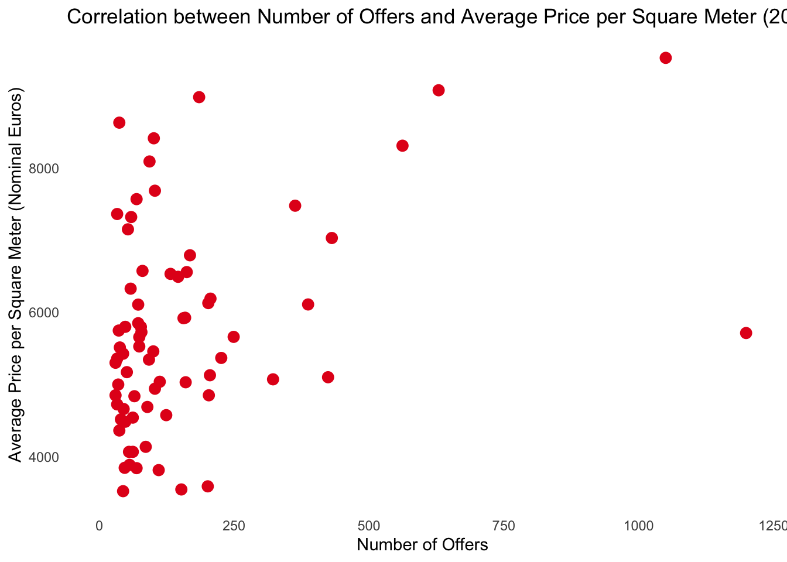
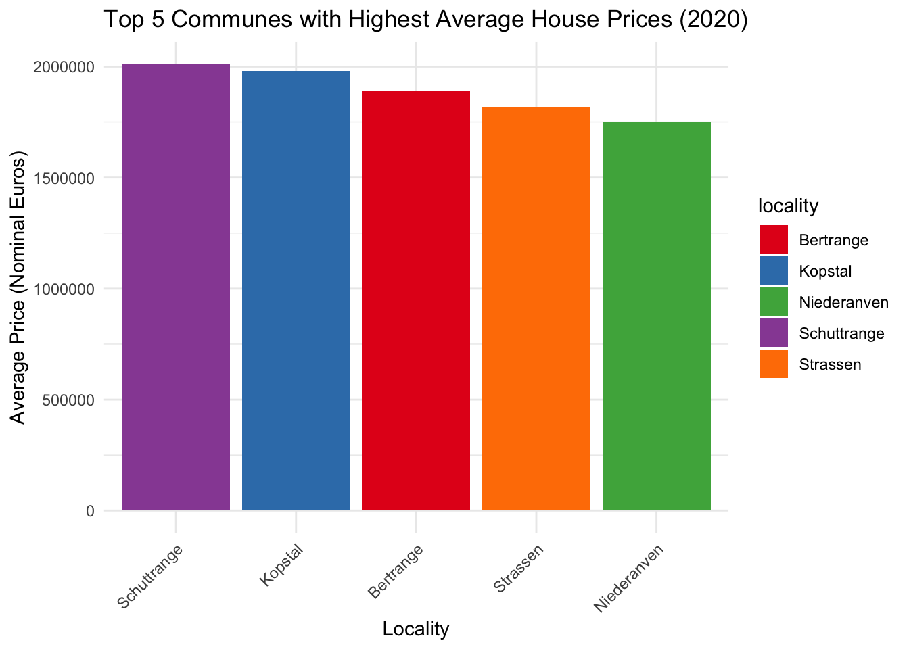

library(dplyr)
library(purrr)
library(readxl)
library(stringr)
library(janitor)
library(dplyr)
library(ggplot2)
library(purrr)
library(tidyr)
library(kableExtra)Housing in Luxembourg
Introduction
We are going to collaborate on a very basic project in this chapter. We’ll be working on this project through to the conclusion of the book. We tried rewrite that project using the strategies that was taught to us. We are going to have developed a repeatable analytical pipeline. We will start off simply by stating that only objective is to complete the analysis.
Also, We will carry out these studies using R Quarto. Some codes in the project is taken from Dr Bruno Rodrigues’ book called “Creating Reproducible Analytical Pipelines with R”.
Libraries
##Saving and Cleaning Data
Next, the code below downloads the data, and puts it in a data frame:
# The url below points to an Excel file
# hosted on the book’s github repository
#| message: false
url <- "https://is.gd/1vvBAc"
raw_data <- tempfile(fileext = ".xlsx")
download.file(url, raw_data,
method = "auto",
mode = "wb")
sheets <- excel_sheets(raw_data)
read_clean <- function(..., sheet){
read_excel(..., sheet = sheet) |>
mutate(year = sheet)
}
raw_data <- map(
sheets,
~read_clean(raw_data,
skip = 10,
sheet = .)
) |>
bind_rows() |>
clean_names()New names:
• `*` -> `*...3`
• `*` -> `*...4`raw_data <- raw_data |>
rename(
locality = commune,
n_offers = nombre_doffres,
average_price_nominal_euros = prix_moyen_annonce_en_courant,
average_price_m2_nominal_euros = prix_moyen_annonce_au_m2_en_courant,
average_price_m2_nominal_euros = prix_moyen_annonce_au_m2_en_courant
) |>
mutate(locality = str_trim(locality)) |>
select(year, locality, n_offers, starts_with("average"))Running this code results in a neat data set:
raw_data# A tibble: 1,343 × 5
year locality n_offers average_price_nominal_euros average_price_m2_nom…¹
<chr> <chr> <dbl> <chr> <chr>
1 2010 Bascharage 192 593698.31000000006 3603.57
2 2010 Beaufort 266 461160.29 2902.76
3 2010 Bech 65 621760.22 3280.51
4 2010 Beckerich 176 444498.68 2867.88
5 2010 Berdorf 111 504040.85 3055.99
6 2010 Bertrange 264 795338.87 4266.46
7 2010 Bettembourg 304 555628.29 3343.22
8 2010 Bettendorf 94 495074.38 3235.26
9 2010 Betzdorf 119 625914.47 3343.05
10 2010 Bissen 70 516465.57 3321.65
# ℹ 1,333 more rows
# ℹ abbreviated name: ¹average_price_m2_nominal_eurosThe naming of the communes is not consistent. Let’s look at and fix it.
raw_data |>
filter(grepl("Luxembourg", locality)) |>
count(locality)# A tibble: 2 × 2
locality n
<chr> <int>
1 Luxembourg 9
2 Luxembourg-Ville 2We can see that the city of Luxembourg is spelled in two different ways. It’s the same with another commune, Pétange:
raw_data |>
filter(grepl("P.tange", locality)) |>
count(locality)# A tibble: 2 × 2
locality n
<chr> <int>
1 Petange 9
2 Pétange 2So sometimes it is spelled correctly, with an “é”, sometimes not. Let’s write some code to correct both these issues:
raw_data <- raw_data |>
mutate(
locality = ifelse(grepl("Luxembourg-Ville", locality),
"Luxembourg",
locality),
locality = ifelse(grepl("P.tange", locality),
"Pétange",
locality)
) |>
mutate(across(starts_with("average"),
as.numeric))Now this is interesting – converting the average columns to numeric resulted in some NA values. Let’s see what happened:
raw_data |>
filter(is.na(average_price_nominal_euros))# A tibble: 290 × 5
year locality n_offers average_price_nomina…¹ average_price_m2_nom…²
<chr> <chr> <dbl> <dbl> <dbl>
1 2010 Consthum 29 NA NA
2 2010 Esch-sur-Sûre 7 NA NA
3 2010 Heiderscheid 29 NA NA
4 2010 Hoscheid 26 NA NA
5 2010 Saeul 14 NA NA
6 2010 <NA> NA NA NA
7 2010 <NA> NA NA NA
8 2010 Total d'offres 19278 NA NA
9 2010 <NA> NA NA NA
10 2010 Source : Minist… NA NA NA
# ℹ 280 more rows
# ℹ abbreviated names: ¹average_price_nominal_euros,
# ²average_price_m2_nominal_eurosIt turns out that there are no prices for certain communes, but that we also have some rows with garbage in there. Let’s go back to the raw data to see what this is about:
What we are going to do is create two datasets: one with data on communes, and the other on national prices. Let’s first remove the rows stating the sources:
raw_data <- raw_data |>
filter(!grepl("Source", locality))Let’s now only keep the communes in our data:
commune_level_data <- raw_data |>
filter(!grepl("nationale|offres", locality),
!is.na(locality))And let’s create a dataset with the national data as well:
country_level <- raw_data |>
filter(grepl("nationale", locality)) |>
select(-n_offers)
offers_country <- raw_data |>
filter(grepl("Total d.offres", locality)) |>
select(year, n_offers)
country_level_data <- full_join(country_level, offers_country) |>
select(year, locality, n_offers, everything()) |>
mutate(locality = "Grand-Duchy of Luxembourg")So let’s scrape and save this list:
current_communes <- "https://is.gd/lux_communes" |>
rvest::read_html() |>
rvest::html_table() |>
purrr::pluck(2) |>
janitor::clean_names() |>
dplyr::filter(name_2 != "Name") |>
dplyr::rename(commune = name_2) |>
dplyr::mutate(commune = stringr::str_remove(commune, " .$"))Let’s see if we have all the communes in our data:
setdiff(unique(commune_level_data$locality),
current_communes$commune) [1] "Bascharage" "Boevange-sur-Attert" "Burmerange"
[4] "Clémency" "Consthum" "Ermsdorf"
[7] "Erpeldange" "Eschweiler" "Heiderscheid"
[10] "Heinerscheid" "Hobscheid" "Hoscheid"
[13] "Hosingen" "Luxembourg" "Medernach"
[16] "Mompach" "Munshausen" "Neunhausen"
[19] "Rosport" "Septfontaines" "Tuntange"
[22] "Wellenstein" "Kaerjeng" We see many communes that are in our commune_level_data, but not in current_communes.
It’s decided to re-host it on Github pages to avoid problems in the future:
former_communes <- "https://is.gd/lux_former_communes" |>
rvest::read_html() |>
rvest::html_table() |>
purrr::pluck(3) |>
janitor::clean_names() |>
dplyr::filter(year_dissolved > 2009)
former_communes# A tibble: 20 × 3
name year_dissolved reason
<chr> <int> <chr>
1 Bascharage 2011 merged to form Käerjeng
2 Boevange-sur-Attert 2018 merged to form Helperknapp
3 Burmerange 2011 merged into Schengen
4 Clemency 2011 merged to form Käerjeng
5 Consthum 2011 merged to form Parc Hosingen
6 Ermsdorf 2011 merged to form Vallée de l'Ernz
7 Eschweiler 2015 merged into Wiltz
8 Heiderscheid 2011 merged into Esch-sur-Sûre
9 Heinerscheid 2011 merged into Clervaux
10 Hobscheid 2018 merged to form Habscht
11 Hoscheid 2011 merged to form Parc Hosingen
12 Hosingen 2011 merged to form Parc Hosingen
13 Mompach 2018 merged to form Rosport-Mompach
14 Medernach 2011 merged to form Vallée de l'Ernz
15 Munshausen 2011 merged into Clervaux
16 Neunhausen 2011 merged into Esch-sur-Sûre
17 Rosport 2018 merged to form Rosport-Mompach
18 Septfontaines 2018 merged to form Habscht
19 Tuntange 2018 merged to form Helperknapp
20 Wellenstein 2011 merged into Schengen As you can see, since 2010 many communes have merged to form new ones. We can now combine the list of current and former communes, as well as harmonise their names:
communes <- unique(c(former_communes$name,
current_communes$commune))
# we need to rename some communes
# Different spelling of these communes between wikipedia and the data
communes[which(communes == "Clemency")] <- "Clémency"
communes[which(communes == "Redange")] <- "Redange-sur-Attert"
communes[which(communes == "Erpeldange-sur-Sûre")] <- "Erpeldange"
communes[which(communes == "Luxembourg City")] <- "Luxembourg"
communes[which(communes == "Käerjeng")] <- "Kaerjeng"
communes[which(communes == "Petange")] <- "Pétange"Let’s run our test again:
setdiff(unique(commune_level_data$locality),
communes)character(0)Save the Data
write.csv(commune_level_data, "commune_level_data.csv", row.names = TRUE)
write.csv(country_level_data, "country_level_data.csv", row.names = TRUE)Analysis and Plots
Change of the offers over the years
#Let's load the datasets:
library(plotly)
Attaching package: 'plotly'The following object is masked from 'package:ggplot2':
last_plotThe following object is masked from 'package:stats':
filterThe following object is masked from 'package:graphics':
layoutcommune_level_data <- read.csv("commune_level_data.csv")
country_level_data <- read.csv("country_level_data.csv")
q1 <- commune_level_data |>
select(locality,year, n_offers) |>
group_by(year) |>
summarize_at(c("n_offers"), mean)
# Create a line graph using Plotly
plot <- plot_ly(data = q1, x = ~year, y = ~n_offers, type = 'scatter', mode = 'lines', name = 'Mean n_offers') %>%
layout(title = 'Mean number of offers over the Years',
xaxis = list(title = 'Year'),
yaxis = list(title = 'Mean of offers',range = c(50,225)))
plotOffers started from above in 2010, reached their peak in 2011 and decreased until 2016. Although they increased again after 2016, they remained lower than the first years.
Change of the nominal average prices over the years
years_of_interest <- c(2010, 2011, 2012,2013,2014, 2015, 2016, 2017, 2018,2019,2020)
q2 <- commune_level_data |>
select(year, average_price_nominal_euros) |>
filter(year %in% years_of_interest) |>
group_by(year) |>
summarize_at(c("average_price_nominal_euros"), mean, na.rm = TRUE)
q2# A tibble: 11 × 2
year average_price_nominal_euros
<int> <dbl>
1 2010 559721.
2 2011 593391.
3 2012 606444.
4 2013 642044.
5 2014 657443.
6 2015 719049.
7 2016 760318.
8 2017 811466.
9 2018 863948.
10 2019 967101.
11 2020 1105294.bar_plot <- plot_ly(data = q2, x = ~year, y = ~average_price_nominal_euros, type = 'bar', name = 'Mean Price')
bar_plot <- bar_plot %>%
layout(yaxis = list(range = c(0, 1.2e6)))
bar_plotAverage nominal prices, starting with approximately 560 thousand, increase every year and reach 1.1 million in 2020. It is clear that there is an inflationary effect.
Change of the nominal average prices(m^2) over the years
years_of_interest_2 <- c(2010, 2011, 2012,2013,2014, 2015, 2016, 2017, 2018,2019,2020)
q2_ne <- commune_level_data |>
select(year, average_price_m2_nominal_euros) |>
filter(year %in% years_of_interest_2) |>
group_by(year) |>
summarize_at(c("average_price_m2_nominal_euros"), mean, na.rm = TRUE)
line_plot_new <- plot_ly(data = q2_ne, x = ~year, y = ~average_price_m2_nominal_euros, type = 'scatter', mode = "lines", name = 'Mean Price') |>
layout(title = 'Mean number of average prices(m^2) over the years',
xaxis = list(title = 'Year'),
yaxis = list(title = 'Average Price m^2',range = c(3000,6000)))
line_plot_newSquare meter prices(m^2) increase significantly over the years.
Average Price change of the selected communes in each year
years_of_interest_2 <- c(2010, 2011, 2012,2013,2014, 2015, 2016, 2017, 2018,2019,2020)
communes <- c("Luxembourg",
"Esch-sur-Alzette",
"Mamer",
"Schengen",
"Wincrange")
q3 <- commune_level_data |>
select(year, locality, average_price_nominal_euros) |>
filter(year %in% years_of_interest_2) |>
filter(locality %in% communes) |>
group_by(year,locality) |>
summarize_at(c("average_price_nominal_euros"), mean, na.rm = TRUE)
q3$year <- as.character(q3$year)
# ggplot(q3, aes(fill=locality, x=year, y=average_price_nominal_euros)) +
# geom_bar(position="dodge", stat="identity")
bar_plot_ly <- plot_ly(data = q3, x = ~year, y = ~average_price_nominal_euros, type = 'bar', name = ~locality)
bar_plot_ly <- bar_plot_ly %>%
layout(title = 'Average Price by Year and Locality',
xaxis = list(title = 'Year'),
yaxis = list(title = 'Average Price Nominal Euros'),
barmode = 'Communes')
bar_plot_lyFor the selected communes, although the Mamer region was dominant in the first few years, we see that the Luxembourg region was the leader in the following years. They are followed by Schengen, Esch-sur-Alzette and Wincrange, respectively.
The most expensive average price nominal euros in the last 4 years (over than 1.5million)
years_of_interest_3 <- c(2017,2018,2019,2020)
q4 <- commune_level_data |>
select(year, locality, average_price_nominal_euros) |>
filter(year %in% years_of_interest_3 & 1506490 < average_price_nominal_euros) |>
group_by(year,locality) |>
#summarize_at(c("average_price_nominal_euros"), mean, na.rm = TRUE) |>
arrange(desc(average_price_nominal_euros))
bar_plot_q4 <- plot_ly(data = q4, x = ~year, y = ~average_price_nominal_euros, type = 'bar', name = ~locality)
bar_plot_q4#Assign 1 to 18 for the order.
q4 <- cbind(order = c(1:18), q4)
#table
kbl(q4, booktabs = T) |>
kable_styling(full_width = T) |>
column_spec(1, width = "8cm")| order | year | locality | average_price_nominal_euros |
|---|---|---|---|
| 1 | 2020 | Schuttrange | 2010937 |
| 2 | 2020 | Kopstal | 1978531 |
| 3 | 2020 | Bertrange | 1891532 |
| 4 | 2018 | Niederanven | 1837880 |
| 5 | 2020 | Strassen | 1814700 |
| 6 | 2019 | Leudelange | 1802527 |
| 7 | 2020 | Niederanven | 1749576 |
| 8 | 2020 | Steinsel | 1675188 |
| 9 | 2019 | Strassen | 1621751 |
| 10 | 2020 | Luxembourg | 1606490 |
| 11 | 2019 | Bertrange | 1606353 |
| 12 | 2017 | Strassen | 1593570 |
| 13 | 2019 | Niederanven | 1579153 |
| 14 | 2019 | Luxembourg | 1576214 |
| 15 | 2018 | Luxembourg | 1542371 |
| 16 | 2019 | Steinsel | 1540155 |
| 17 | 2020 | Leudelange | 1534376 |
| 18 | 2020 | Walferdange | 1520943 |
Considering inflation equality, house prices have increased significantly every year. Buying a house can be seen as a good investment tool. When we look at the first bar plot, we see that there are more than 1.5 million houses in 2020 and 2019. The other table gives us the list in order. Prices for 2020 stand out again.
Is there a correlation between the number of offers and the average house price per square meter in Luxembourg for the year 2020?
# Filter the data for the year 2020
data_2020 <- commune_level_data |>
filter(year == 2020)
my_colors <- scales::brewer_pal(palette = "Set1")(1)
ggplot(data_2020, aes(x = n_offers, y = average_price_m2_nominal_euros)) +
geom_point(color = my_colors[1], size = 3) +
labs(title = "Correlation between Number of Offers and Average Price per Square Meter (2020)",
x = "Number of Offers",
y = "Average Price per Square Meter (Nominal Euros)") +
theme_minimal() +
theme(panel.grid.major = element_blank(), panel.grid.minor = element_blank()) +
scale_color_manual(values = my_colors)Warning: Removed 31 rows containing missing values (`geom_point()`).
It seems there is no correlation between number of offers and average price(m^2)
What are the top 5 communes with the highest average house prices in the most recent year (2020)?
# Filter the data for the year 2020
data_2020 <- commune_level_data |>
filter(year == 2020)
# Sort the data by average_price_nominal_euros in descending order and select the top 5
top_5_communes_2020 <- data_2020 |>
arrange(desc(average_price_nominal_euros)) |>
head(5)
# Create a bar plot
my_colors <- scales::brewer_pal(palette = "Set1")(5)
ggplot(top_5_communes_2020, aes(x = reorder(locality, -average_price_nominal_euros), y = average_price_nominal_euros, fill = locality)) +
geom_bar(stat = "identity") +
labs(title = "Top 5 Communes with Highest Average House Prices (2020)",
x = "Locality",
y = "Average Price (Nominal Euros)") +
theme_minimal() +
theme(axis.text.x = element_text(angle = 45, hjust = 1)) +
scale_fill_manual(values = my_colors)
As we examined a little in our previous questions, we only took the values in 2020 for the question. Accordingly, Schuttrange leads the top 5 communes in terms of expensive prices.
References
https://raps-with-r.dev/project_start.html
https://quarto.org/docs/computations/r.html